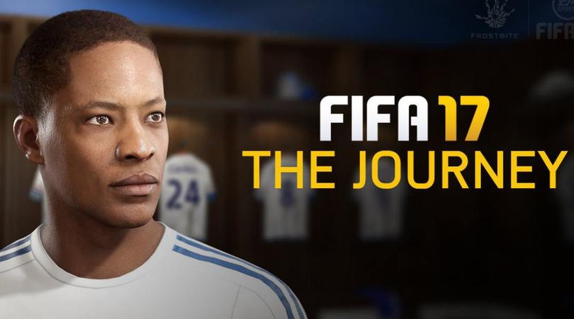
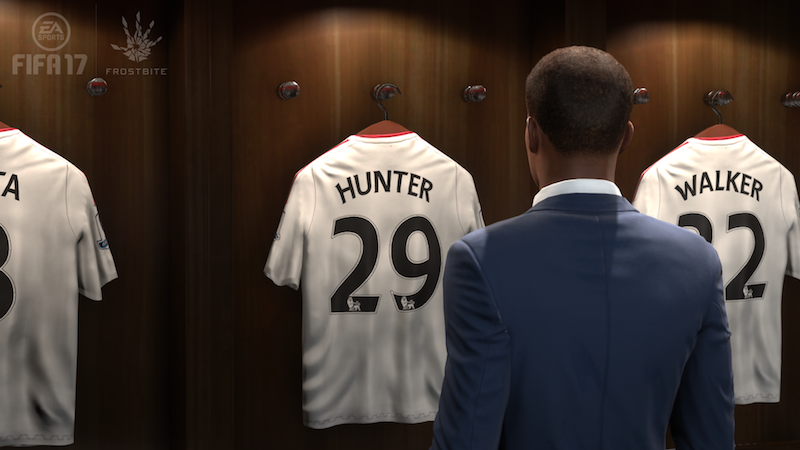
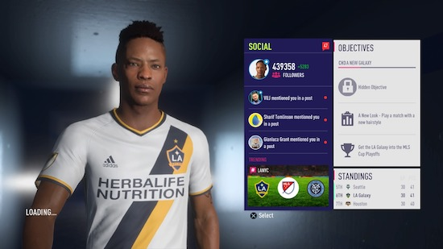
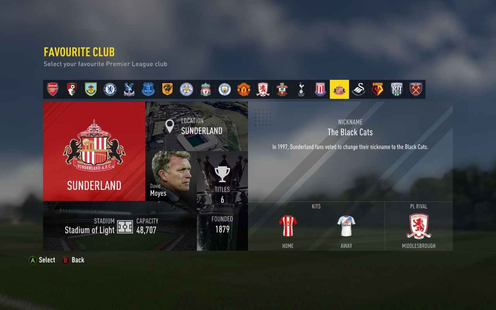
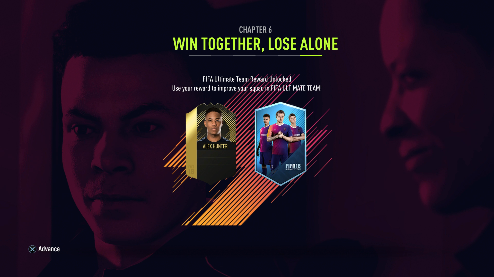

The Journey
Alex Hunter zawital w Fifie 17. Od tamtej pory wielu graczy sledzi jego poczynania. Ja jako fan Pro Clubs, zagralem, przegralem, ale nie poczulem tego. Moze jakby to byla postac, ktora gram w Pro Clubs, inaczej do tego bym podszedl. Ale no nic juz, zapowiedziano koniec Alexa w Fifie 19. Bedzie to jedyna fikcyjna postac, ktora dostala wlasny tryb i stala sie gwiazda w 3 lata. Od zera do bohatera. W fifie 17 po raz pierwszy wcielamy sie w tego nastolatka. I to od nas bedzie zalezalo co sie z nim stanie. Gramy serie trenigow i wybieramy pierwszy klub. Ea dalo nam wybor czy grac calym skladem, czy tylko Alexem. Co jest wedlug mnie nie stosowne, bo po to nim jestes, by nim grac. Koniec koncow po miedzy meczami mamy filmy z zycia naszej przyszlej gwiazdy. Kazda kluczowa decyzja ma swoje konsekwencje. Moze wlasnie to przyciaga graczy, opowiesc. To tak jakby czytac dobra ksiazke, czy ogladac dobry film, z jedna roznica. To ty masz wply na poczynania gwiazdy. Nie bede opisywac co was moze spotkac w The Journey. Opowiem wam, jakie sa moje odczucia... Kto by nie chcial byc Alexem Hunterem, reka do gory. Nikt? No wlasnie. Ea okreslilo Alexa jako wschodzaca gwiazde, ktora ma przejsc z punktu A do punktu B. Nie zaleznie od wynikow, koniec jest ten sam. Jak przejdziesz droge zalezy tylko od ciebie. Tryb sam w sobie jest dobry, ale malo rozwiniety, dlaczego? Po pierwsze szybko sie konczy. To nie UT, czy Pro Clubs, gdzie grasz cala fife. Przechodzi i idziesz na futa po karte Alexa, ktora jest tak slaba, ze ja zostawiasz z sentymentu. Po drugie przystanek koncowy jest juz z gory ustalony. Po trzecie jest to film z mozliwoscia sterowania, a nie na odwrot. Najbardziej brakowalo mi w tym, emocji. Wszystko za szybko. Pare meczy i koniec. Jest w tym trybie potencjal, lecz nalezalo go lepiej wykorzystac, ea postanowilo ten tryb jednak porzucic lub jak to woli skonczyc. A fanom nalezy uczcic chwile ciszy w koncowej scenie w fifie 19.